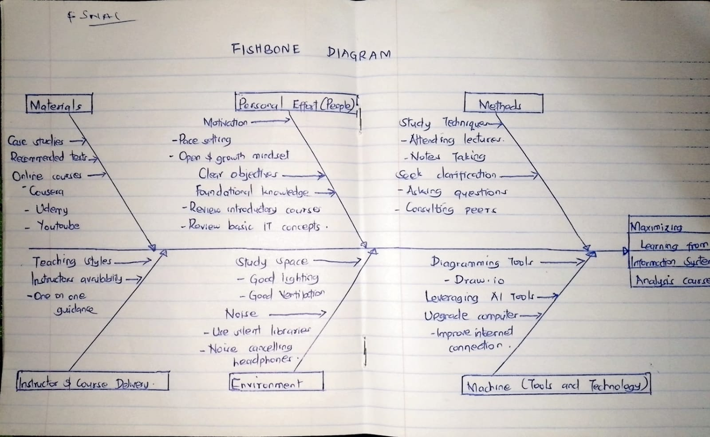

Analysis
The fishbone diagram below provides a detailed breakdown of potential factors influencing the goal of maximizing learning from the Information Systems Analysis course. This structured analysis identifies reasonable causes, excludes less relevant factors, and suggests actionable steps for improvement.
Fishbone Diagram
Answers
Reasonable Causes:
- Adopting a growth mindset and setting clear objectives.
- Reviewing foundational knowledge through introductory courses and IT concepts.
- Leveraging recommended materials like textbooks, case studies, and online platforms (Coursera, Udemy, YouTube).
- Active participation in lectures by taking notes and seeking clarification through peer consultation.
- Improving study environment, such as ensuring good lighting, proper ventilation, and minimizing noise using noise-canceling headphones.
- Using diagramming tools like Draw.io and upgrading internet connection when needed.
Excluded Causes:
- Dependence on one-on-one guidance, as it is not always feasible.
- Upgrading computer equipment unless existing tools are insufficient.
Suggestions for Improvement:
- Focus on maintaining a consistent and disciplined study routine.
- Utilize available resources, such as course materials and online tools, to supplement learning.
- Participate actively in group discussions to clarify doubts and reinforce understanding.
- Create a distraction-free and comfortable study space.
- Take advantage of technology tools to visualize concepts and streamline workflows.
Conclusion
By systematically analyzing the factors outlined in the fishbone diagram, we can better understand the underlying issues and develop a strategic plan to address them effectively. Implementing these improvements ensures a more enriching and successful learning experience in the Information Systems Analysis course.